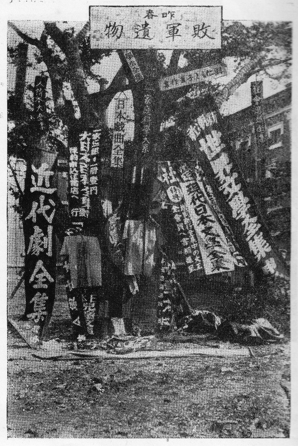
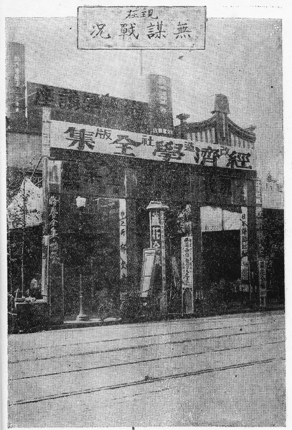

［＃ページの左右中央］
著作界の売名家、奇人変人中のニセ悪人
雑学大博士 外骨先生著 近来にない簡潔犀利の力作
一円本流行の害毒と其裏面談
熱烈の筆 痛快の論 辛辣と皮肉 好謔と善罵
拍案拍掌 愉絶壮絶 溜飲の薬にもなる
（一冊定価金タッタ十銭）
［＃改丁］
本書の著者は彼是と多忙の身であるが、現在の円本流行を黙過すべからざる害毒問題として、天下に吼号し、以て読書界の進展と出版界の転機を促さんとするのである、これがため著者は、円本出版屋の怨恨と憎悪を受けて、ヤミウチされるかも知れないが、著者は再生外骨として一二の国家的事業を遂げねばならぬ貴重の身、今彼輩の手にかかるのは勿体ない、ナルベク其危殆を免れたいという生存欲で、聊か深刻と徹底を欠くの嫌いはあるが、総て具体的の記述を避けて、抽象的暗示的の筆を執る事にした、それで何だか卑怯らしい所もあるが、円本出版屋の大広告を載せて有卦に入る諸新聞、印税を貰って北叟笑む蚊士共、それ等に縁固ある諸雑誌、評論家ばかりで、誰一人此時弊を打破せんとする志士なきを慨して奮起した著者、此勇気だけは何人も認めてくれよう
昭和三年十月十日
再生外骨
［＃改ページ］
［＃改ページ］

［＃改ページ］
［＃ページの左右中央］
本書を披見して、一時円本潮来の渦中に巻込まれた事のある人々は、少しクスグッタイ感を起される項もあろうが、此極端なる厳正批判と、遠慮なき内情暴露とは、マタ後日のおタメに成る点もある筈だから、ムカ腹を立てず、冷静に全篇を通読なさい、お笑草の所もありますよ
［＃改ページ］
著者 再生外骨
文運促進とか、読書子幸福とか、出版界革新とか云って、円本の流行を謳歌して居る奴も多いが、それ等はいずれも、永々貧乏生活をしていた蚊士輩が、図らずも巨額の印税にあり付いたので、其礼心やら、流行継続の野望から出たソソリ文句を並べるに過ぎない、古来の俚諺に「
［＃改ページ］
我出版界のため、我読書界のため、
要は破壊にあらずして建設、悪物退治にありて正業保護、罵らんとして罵るにあらず、傷つけんとして傷つくるにあらず、正論硬議、熱血の
但し一円本とは一冊一円の全集物、及び一円以下のヤクザ本全集の事であって、一冊二円、三円、五円の全集物を云うのではない、それ等は一円本予約出版の流行に乗じて出ただけのものもあり、或は其流行に関係なく、旧来行われた全集予約の例に倣って出たのが、タダ時を同うする迄のものもあり、又概して堅実の著作有益の良書たるものが多いから、ここにはそれを除外とするのである
害毒の要目
版刻の売本が始まった慶長以来未曾有の大弊害なり
円本出版屋の無謀 図書尊重の念を薄からしむ円本著訳者の悖徳 予約出版の信を失なわしむ
普通出版界に普及せし悪影響 融通金主の当惑
多数少国民を荼毒せし文弱化 印税成金の堕落
広告不信認の悪例を作りし罪 国産用紙の浪費
批評不公正の悪習を促せし罪 製本技術の底下
通信機関の大妨害 一般財界の不景気を助長す多数少国民を荼毒せし文弱化 印税成金の堕落
広告不信認の悪例を作りし罪 国産用紙の浪費
批評不公正の悪習を促せし罪 製本技術の底下
運輸機関の大障礙 一般学者の不平心を醸成す
全国各地津々浦々までへも及ぼせし稀代の大流毒なり
［＃改ページ］大量生産を基礎として、一円本出版の企画をしたことは、大なる無謀であった、資本主義の極端な弊害を暴露し、他へ及ぼす悪影響と自然に起る悪結果を考慮せず、只管自家の営利をのみ目的としたのは、商業道徳の破壊ばかりでなく、経済原則破壊、風教破壊たる非国家的非社会的の暴挙と云って可なりである
次に利己一遍の有象無象が、自衛上の已むなきに出たとしても、発頭者の無謀をマネて其罪悪を拡大し、其害毒を増大せしめたのは、共に不埒の暴挙である、其暴挙であるが故に、悪竦の手段を講ぜねばならず、卑劣の窮策を廻らさねばならぬハメに陥りやがて悲哀を招き煩悶を来たして、終には没落するに到るのである、これ皆無謀行為の自業自得、考慮なき暴挙の悪因悪果として、当然の成行であらねばならぬ、以下条を追って其実証実例を列記する
附記 大量生産の円本出版其事が無謀の暴挙であるばかりでなく、円本出版屋の手段に就ても種々の暴挙がある、確乎たる収入の予算もないに、諸新聞へ大広告文を掲載せしめて其代料を支払わず、紙屋印刷屋へ注文した書冊の代料を支払わず、或は、他人の著作権を侵害して円本の材料とするなど、彼等の不徳行為は※［＃「てへん＋婁」、U+645F、47-12］指に遑なしで、其ため強硬の談判を受けて逃げ隠れるもあり、示談金を出してアヤマルのも多い、諸新聞紙上に掲出された岩波書店の被告事件などは表沙汰の一例に過ぎない
其一例とは、往年大倉書店が故夏目漱石と著作権共有の契約で出版した『吾輩は猫である』を、曩に岩波書店が一円本として出版した『漱石全集』中に無断で入れたので、大倉が漱石の遺族と岩波書店主人とを共同被告人として、著作権侵害の訴訟を起し、損害賠償金三万余円を出せと云う事件である
漱石の遺族などは論ずるに足りない、岩打つ波は狂瀾の相、東京の出版屋中で、比較的信用のあった岩波書店ですら此醜怪事あり、他は推して察すべしだ出版屋の無謀に合意し、暴挙にクミした著訳者にはロクな者なしである、見識や徳義を有する者は一人もない、曾て三円五円の定価で売らせた物を、原版者に交渉もせず一円本の中に入れさせて印税を貪る二重転売者、既に他人の翻訳で刊行されて居る物を、著作権侵害の訴訟を免れんとして、文章を改作したに過ぎない剽窃受負者、偶ま原書に就いて翻訳する者にしても、其無学なるが故に原語を解せず訳語を知らずで、意義不可解な誤訳だらけの物を平気で出版させた者、又著作者としての行為で最も不徳を極めた者は、
中にはイクラか真面目な者もないではないが、概して円本の著訳者は不正不義不道不徳の小人バラ、出版屋を臓物故買犯者、著訳者を背信、偽作、剽窃の常習犯者と見れば大差なしである
古珍書を骨董品視する玩物喪志の輩は例外とし、総て所蔵の図書に対しては尊重の念がなくばならぬ、明晢の論叢、絢爛の文藻も、其著作者の性格を崇敬して感化を受け教導を受ける所に蔵書の価値があるもの、それが一円本流行の後はドーであろう、往年三円五円で買った物が、一円本の中に包含されて、物的価値の損亡に帰した時の怨嗟、著者の利己一遍たる不徳行為に原因するもの、図書尊重の念を薄からしめると共に、著者崇敬の念も亦薄くサメざるを得ないではないか
円本礼讃者は文運促進とか文学普及とか云って居るが、果して文運促進か否か、果して文学普及か否かは別に記するが、仮りに促進であり普及であるにしても、一方に此尊重心減損、崇敬心潰滅の害を与えつつありては、図書本来の使命たる教化も育成もダイナシではないか
円本の予約出版と称した事は、旧慣破壊の一害であった、いずれも「入会御申込みの際は予約金として金一円御送り下さい、これは最終の会費にあてます、中途で退会さるる御方には返金致しません」との規定であったが、予約者奪取の競争上、取次店からは予約金を取らない事にしたので、中途の破約も随意と成り、残本の返送も当然と成り、予約出版と云う事実は全く無くなって了った、そこで一般読書子の方へは規定無視の念を普及せしめ、これがため、従来小資本出版屋の便宜手段であった予約出版は行われない事に成った
斯く旧慣破壊で他へ迷惑を及ぼしたのみでなく、自己が「予約会員にのみ頒つもので一冊売りは断じて致しません」と書いた事も反古にされ、今は何処の本屋にても一冊売りをする事になって居る、
「出版界に危機をもたらした円本」と云った人もある如く、大量生産で資本主義の弊を遺憾なく暴露した円本出版は、実に普通の出版界に危機をもたらしつつあるのである、自衛上已むを得ぬとして、同じ円本出版に変じた書肆も多いが、此円本流行が永く継続すれば、出版界は共倒れの全滅になるかも知れない
盲目千人目明一人の世の中、カサ高いヤクザ本を見て「これが一円とはヤスイ物、従来二円三円で買って居た本よりも
自己のタメに成る良書を買わないで「安かろう悪かろう」の全集物を買うコケ共の無智は憫むべく、これを買わせる事にした円本出版屋の暴挙は憎むべしである
円本中には、科学的有益のものもあるが、それ等はヤハリ少数の読者で、利害は相殺されるものに属する、大量生産で社会を毒しつつある円本は、文芸上の駄作物や、講談という卑俗浅薄の読物類が多いのである、本項はそれに就ての害を挙げる
円本出版者悉くが資本家ではない、十中の七八までは、自家の金でなく、他より融通を受けて遣繰って居るのである、それは従来の出版屋が「近頃は円本が流行で、普通の単行物を出したのではモノになりませぬ、ワタクシも円本をやるツモリですが、金が少し足りませんから、暫くの間四五万円融通してくれませんか」とか、或は素人が「昨今は円本をやりさえすれば、儲かるのです、金方になって下さい、二三ヶ月の内に返します」など説きつけて金を借りたのである、サテそれが予算の如く儲からない、さりとて止めれば最初の宣伝資金が丸損になる、アトは大した費用もかからないから継続してやればイクラカずつの利益はあると云う勘定で、細々にやって居る、そこで濡手に粟のような甘言を信じて融通した金方は、少しも入金が無いに当惑して居るとの話を聴いた、円本出版屋は後家泣かせ隠居泣かせの罪をも作って居るらしい
大きな強窃盗犯人が捕えられるのは、大概色里での豪遊中である、それは平常貧乏生活の者、持ちつけない大金が
円本の著者訳者は、大量生産であるから、五分か一割の印税でも、十万二十万の押印料は、少くも五千円、多いのは一二万円の金が懐中に入る、そこで年中貧乏生活をして下宿料もロクに払えず、或は嬶の腰巻一つも買えなかった凡夫の奴共、強窃盗犯者と同様、先ず第一に駆け付けるのがカフェー、新調の洋服か何かで、五円のチップ「あなたホントニ
ここに一つ附記せねばならぬ事がある、それは「印税前借りの吐き出し」という話、円本流行の凋落に近づいた例証の一つ、雑誌『日本及日本人』所載の一節である
いよ／＼円本の没落期が来た、世界文学全集が十万以下に減じたとか、又良さそうでいけないのが、長篇小説全集とやら、もうそろ／＼落ちかかったという
長田幹彦といえばその昔、今の三上於菟吉ほどの全盛で文壇を唸 らしたほどの男今ではあまり流行らず、子供も出来て、いやに落ついてしまった、それでも円本でこれもドサクサと金が入ったが、なんでも門は平常閉じてあって、プロの侵入を防ぐという、ところが印税を前借りしてしまったので、この頃のように円本の予約者が減じて来ては、あとになった作者は不安此上もなく「一万部位になってしまっては、此方から印税を返さねばならぬ」と長田幹彦大いに悄気 て居る由
最初の馬鹿景気に高調子となって、蚊士どものネダルがままに印税の前渡しをした円本出版屋、これも予想裏切「ソレ見ろ」の一つである長田幹彦といえばその昔、今の三上於菟吉ほどの全盛で文壇を
新聞紙上の広告文に誇大と虚偽を並べたものが続出するので、愚直な読者もソー／＼は欺かれず、年を追って広告は不信認と成り、新聞読者の増加率に逆比例して広告の効力は漸次薄弱となりつつある今日、広告不信認の悪例は、単に円本のみには限るまい、彼の講談社などが「満天下の熱狂的歓迎」と云っても、誰一人信ずる者はなく、「売切れぬ内にお早く／＼」と云っても、急いで買いに行く者はあるまい、と難ずる人もあらんかなれど、講談社の如きヤシ的出版屋の広告はそれにしても、従来然らざりし社名を以て大々的一頁の広告、シカモ前例のない一円本の宣伝、講談社の広告には欺かれない連中も、ツイ、ヒッカカリて馬鹿を見るに至り、今後は如何なる広告も信認するに足りないものとの悪例を示した事実は確な所であろう、要は円本出版屋が悪例の
新聞社が営利事業に化して以来、主張も見識もゼロに成り、編集部が営業部に支配さるるに至り、財源たる広告料の収入に成る事であれば、詐欺広告をも知らぬ顔で載せ其被害投書がイクラ来ても没にするなど、スリの上前を取るような方針であるから、広告料の大増収を得た円本の攻撃文などは一行の記事にも載せないのみか、反って流行を
我輩は資本主義を絶対に否定する者ではない、其利を認め其害を認めて居る、現在に於ける円本出版の流行は、資本家ならぬ遣繰屋が企画して居るのもあるが、いずれにしても大量生産は資本主義を根底とするもの、円本流行は即ち資本主義の跋扈で、其弊害のみを多々現出して居るのである、本書列挙の害毒十六ヶ条は悉く資本主義より生ぜし害毒に外ならない、其中で最も顕著の事実は洋紙の浪費である、多く売れなくてもよい、大量生産の半数がモノになれば実費を償うに足りる、残る半数をツブシと見ても、
従来の単行本は概ね一千部乃至三千部を限度として初版を製本したのであるが、流行の円本は十万二十万、多きは四十万部の製本となった、そこで従来一冊の製本料が二十銭乃至三十銭位であったものが、大量生産の「数でコナス」という通則で、一冊八銭若しくは十二三銭で請負う事になったのである、それがため従来一時間に五十部仕上げて居たものが、百部も二百部も仕上げねば勘定に合わぬ事になったので、巧遅よりも拙速という事に変じたのである、拙速……粗雑でも早いがよい……これが製本技術の低下で、従来の一千部乃至二三千部位の製本料は旧価のままでありながら、拙速に手馴れた職工共はヤハリ廉価な円本同様の仕上げをするのである、それで少数の単行本出版屋は、従前通りの高価を払って粗雑な製本を押付けられる事になった、これも資本主義の円本が普通出版屋に及ぼした害毒の一つに算えねばならぬ事であろう
従来広告依頼者の多い大新聞社は、威張ッて依頼者の要求を容れない事が多かったのであるが、円本流行で一頁又は二頁続きの大広告を出す事になったので、大新聞社が一層威張るように成った、従前は依頼した当日より五六日目若しくは十日以内に掲出して居たが、昨春以来はそれが十日も二十日も遅れ（死亡広告だけは例外）場所指定などは、一ヶ月前に申込んで予約せねばならぬのである、それを若し何日迄に是非掲出して下さいと頼めば、ソンナに急ぐのなれば外の新聞社へおいでなさい、此方では迚も出せませぬと、ケンツク同様の
汽車汽船又は自動車で大貨物を輸送するのは、供給者より生産物を需用者に回付して消費或は使用せしめんがためである、それで円本を各地の取次店へ回付するのは、需用供給の定則による生産物の輸送と見てもよいが、廃物同様の残本を逆送するのは、輸送の本旨に反したムダゴトであると云い得る、無謀の暴挙で大量生産を敢てした円本の残本を各地方から東京へ返送して来た総数は、昨夏以来今秋までの間に約三百万冊である、其三百万冊を小車、自動車、汽車、汽船等に積み卸した労力と時間だけでも少からぬ徒費ではないか、そして其徒費のために正当な生産物を輸送する機関に妨害を与えたのである、今後も円本出版の継続する限りは、尚其徒費を繰返し、妨害を繰返すに違いない、洋紙の浪費と共に、国家の損害亦大なりと云わねばならぬ、此点から見ても、資本主義の大量生産たる円本出版を呪わざるを得ないではないか
世界大勢の影響と、為政者の政策其よろしきを得ないために、我国財界の不景気は永く続いて居る、明年の春までには回復するだろう、今年の末までには直るだろう、などの説は屡々耳にしたが、一向実現しない、そして此不景気の継続を円本出版屋が助長して居る事実を発見した
資本家ならぬ遣繰屋が経営して居る円本出版屋が多いので、無謀なる大量生産のために事業の困難に陥って居るが多く、何々堂が紙屋に幾万円の負債とか、何々社が印刷屋に幾十万円、何々社が広告取次屋に十幾万円の小切手を渡してあるとか、何々会が製本屋に幾万円の借りがあるなど、其聴いただけを合計しても約四百万円位の不払額になる、これが不景気助長の金融逼塞を甚だしからしめて居るに違いない、厄介至極な者共ではないか、そこで「世直し」のためにも円本出版屋をブッ倒さねばならぬ
ロクでもない蚊士とか、無学無識の翻訳者などが、円本の著者訳者として多額の収入を得、所謂印税成金になって、遊里に耽溺して居るとか、住家を建築したとか聴いては、普通の人情として嫉み根性を起したり、羨しがるのは無理ならぬ事であるが、そんな劣等感情でなくして危険な反感を持つ人々が、有識階級連の間に多い
真面目に修養して最高の学府を出た者が、日々勤務して月俸百円とか二百円、或は十年二十年、刻苦研鑽を重ねて立派な学者に成った者が、月収僅かに幾十円というのが世間に多い、否それが現代の実状実相である、此連中には世俗に超越した無関心の人々も多いが、中には印税成金の事を聴いて、馬鹿／＼しい世の中である、此不公平を打破せねばならぬと、所謂赤化しつつある人も少くない、ここに想到すれば、国家主義の上よりしても円本出版屋を掃蕩せずばなるまい、嗚呼
明治時代に円助という語はあったが、円本という語はなかった、円本という語は円タクと同く、昭和新時代の新熟語である、明治旧時代の円助芸者は一円札でコロブ（売淫）という意義、昭和新時代の円本書肆が一円本でコロブ（破産）という事になれば好一対
此駄洒落を聴いた座中の一人が、東京牛込神楽坂には円本芸者というのがあろと告げ、円本成金に愛されて居る芸妓ということだとの説明、それでは平凡で面白くない、表装ばかり奇麗で、内容がゼロのため少しも売れない古本と同じ芸妓を、円本芸者と呼ぶことにならないかネ――、とやったので「どこまでもですナー」と一座哄笑
これより以下は、円本出版屋に関係した事、円本予約者に関係した事、円本の残本を買取ったゾッキ屋（残本を仕入れて各地方の本屋へ売ったり、市内の露店商人等に売ることを専業とする問屋）の事などを記述するのである
但し前記の「害毒の十六ヶ条」中にも裏面談がある如く、此裏面談の中にも害毒論が混じて居る
裏面談は以下に記述する外、マダ幾許でもあるが、大同小異の事であり、或は指名して具体的に書かねば面白くない事もあり、或は事実に相違なきか否かを偵察せねばならぬ事などもあるので、総て省いた、蚊士と出版屋との間に於ける瑣談は多くあるがいずれも俗界の常事、採録する程の事でもない、今後見聞した中に珍談奇事があれば後日『円本全滅記』刊行の時にでも記述する
円本出版屋が出した諸新聞紙上の大広告に釣られ、其内容見本のソソリ文句に釣られ又取次店の甘言に釣られた天下の衆愚が、潮の如く殺到したのである
○ 既刊本の三円も五円もした本が、タッタ一円で買えると云うこと、オマケに本棚をタダで貰えると云う事○取次店が宣伝した如く、読んだ後には古本として売っても、一冊一円のものが一円四五十銭に売れるものと信じた欲ボケ共の多かった事○一円本の予約者にならない人々は、友達の間でハバが利かないと思って、丁稚小僧に至る迄が加わった事
約、こんなワケで、従来一冊の蔵書もなかった連中までが、応募者となったので、三十万四十万の申込みを受けた出版屋もあったのである、教育普及の聖代とか、新文化国の人民とか云っても、案外、馬鹿者の多い現代であることが知れよう
前記の理由で予約者となった連中が、間もなく破約者となった理由を概括すれば、大略左の如しである
○ 装幀が奇麗でモリの多い書冊を手にした最初は満足もしたが、サテ、読んで見ると面白くない、又頁数が多いのでタヤスク読み切れない、そこで二三冊を受けた後、アトはイラナイと云って破約した人々
○ 古本として売りに行くと、ヨイ方で一冊五十銭、ヤスイのは一冊二十銭三十銭というミジメな安値に呆れて破約した人々
○ 続けて読みたいにしても、一二ヶ月後に買えば、高いのが六十銭、安いのは三十銭位で買えるから、毎月一円払うのは損だという勘定づくで破約した人々
○ 応募当時の雷同性と同く、君はヤメタか、僕もヤメタと、雷同的に破約した人々
斯様な人々が多かったので、最初四十万にも達した予約者が、漸次破約して昨今は其四分一の十万位に激減したのである現在まで残っている其十万の予約者中には、一時払をした人々が、破約を申込んでも返金しないので泣寝入りになって居るのと、一時払いでなく、予約金一円を入れてあるので、その一円を見切れない人々などが多分を占めて居る
各地の取次書店では、応募数を多くせんとて、最初「一円の予約金などはいりませぬ書冊引替に一円ずつお払い下さればよろしい」と云って引き入れたので、破約されても一円の要求は出来ないのである、そこで残本の返送、出版元の泣面、事業の破綻とも成ったのである、聴くだけでも気味のいい話ではないか
昨今は、予約規定を励行して残本の返送を受取らない出版屋もあるが、それは一万内外の印刷に過ぎない読者少数の円本で、大量出版屋はヤハリ返本を受取る事にして居る、中には二割以内の返本に限るとしたのもあるという
円本出版屋が予想裏切の一として一時当惑したのは、予約金取込みのアテ外れであった、最初予約の証拠金として一円を徴収し、それを最終篇の代金に当てるという規定で、取次店へ申込んでも同く一円払込という事にして居たが、取次店では其証拠金を払込まない、其口実は「若し出版元が中途で止めた時、其証拠金を返して呉れないと此方の責任でお客へ一円返弁せねばならぬ損害を受けるから、今予約金を渡す事は出来ない」と云い、又「予約金を払込まねば無効だと云うのなら、アナタの方は止めにして、他の出版屋の本に変更させます」とホザイタのもあった、尚又取次小売店では右の如く出版元へ予約金を払込まない事にしたので、馴染の顧客からは予約金を取らない事にし、其取らないのが例となって、酒屋の御用きき、床屋の下剃などの新客からまでも予約金を取らなかったのである
そこで、出版元では、五万人の予約者があれば五万円、十万あれば十万円の収入があるものと予算して、三万円六万円の新聞広告料を支払い、内容見本代の実費を支払っても、尚余りがあると、虫のよい勘定であったが、出版元への直接予約者は十分の一に過ぎないので、これが第一のアテ外れであり、此予約金を取らない事にしたのが後に破約者続出の一因ともなって、それが第二のアテ外れになったのである
前記の如く円本予約の取次店が証拠金を出版元に払込まない口実は、取次店の横暴と云えば云えない事もなく、又『子供文庫』の出版元が予約の証拠金を強要するのならばお客にすすめて、『笑愕全集』に変更させると威喝したなどは、ホントの横暴であろうがソコまで威喝されて平伏した出版元のイキジなさは、アワレ憫然の至り、ソコが競争者の弱味、取次店の付ヶ込み所で、横暴にしても痛快な横暴であったネーと、当時我輩は話柄の一にしたのである
近頃聴く所によると、甲乙両店が競争して居る二種の『エリコノミ全集』は名古屋市で猛烈な競争戦を開始し、一方が各書店の手代を自動車に乗せて、景気よく顧客の戸別訪問をやったので、一方も我負けじと同く手代連を引出し、自動車に乗せて市内巡りをやったが、此時其手代連の一人が或者に「東京の出版屋は地方の取次店を横暴だと叫んだ事もあったが、昨今は東京の出版屋が横暴です、忙しい用のある我々を無理に引出して自動車に乗せ、各町の家々に立寄って「どうぞ宜しく」と選挙当時の投票乞食見たようなマネを強要されるのは横暴じゃありませんか」と云ったそうである
咄 如何に必死の競争とはいえ、トロクサイ手代連をして斯かる気焔を吐かしめる程の愚劣手段を演じて、無駄な金を遣うなど、経済ならぬ不経済極まる没常識の沙汰ではないか、今に其不経済運動のタタリで、約束手形の不渡だけではすまない事になるだろう、ナモ
これは本年六月頃の事である、一円本の第一巻より六巻までとか、第一編より四編までとか云う新本がゾッキ屋の手を経て、少しずつ、各地の古本屋に出た時、大阪の新本取次書店が連合して東京の出版元二三へ談判をした、それが面白い
「我々が一円で配付したのと同じ新本が、昨今古本屋の店に一冊四十銭内外の正札付でならべられて居る、それでお客様から苦情を持込んで来て、結局今後はイラナイと云って破約される、予約者が売った古本なら仕方もないが、出版元が残本を安売しては、我々が迷惑至極である、今後も尚又残本を安売りするのならば、我々は連合して円本の取次販売を断然止めるがドージャ」
此強談判を受けた出版元は青く成ってアヤマリ「それは御尤であるから、予定の冊数を完全に出版した後でなくば、残本安売りをいたしませぬから、ドーゾ不相変」と一同が平伏して無事に落着したのである、これで完成後は安売りする事を明言して居るのである、此時談判された出版屋の一人たる神田の某社主人が「実は安売りしたのではありません、ゾッキ屋某へ抵当として入れてあったのを期日までに行かなかったのを口実にしてそのゾッキ屋が当方へ無断で揃物だけを安売したのであります」と弁解したそうであるから、著者は其のゾッキ屋の主人に逢い、無断で売ったのか否かを糺して見ると、其主人は「抵当に取ったのではありません、初めから買切です」と明確に答えた、いずれが真であるにしても、出版屋の窮状は此一事ででも察し得られるであろうが、不思議なのは、其出版屋某が、倒れもせず今に継続して居る事である、其後ドコからか金主を見付け出したのか、又はウマク遣繰して、平凡ながらも余命を繋いで居るのであろうさて完成後は安売りする事になっていても、何処のゾッキ屋も買わないであろうから、如何に処分するかが問題である
著者が親しく聴き取ったのは、外神田佐久間町辺の何某というゾッキ屋と、内神田表神保町の何々社というゾッキ屋との二軒である
先ず甲の主人は語った所を略記する
「去る三月、円本のゾッキを扱う皮切り、前例が無いのだから儲かるに違いないと云う予算で、一円五十銭の上製本を一冊四十銭の割で買い、一円本を二十銭の割で買いました、総高が三万円です、トコロが案外、サッパリ売れませぬ、最初は四十銭のを六十銭、二十銭のを三十銭の卸売ということにしたのですが、夜店出しは勿論、各地方の本屋が買わない、そこで六十銭を五十銭に下げ、三十銭を二十五銭に下げましたが、それでも売れない、昨今は原価に足りない三十五銭、十八銭という損をした安値をいっても買人なしです、在外邦人へ向ければ売れるだろうと思って、米国に荷出をして居る名古屋の何某へ見本を送りましたが、在外邦人も内地と同じく、円本予約の破約者が続出で、取次店が困って居る際だから、安価の残本だといっても、送り付けはダメです、なにしろ米国では一円本を送費かけて一円四十銭位に売らねばならないのですが、ゾッキの残本でも向うへ送れば一冊一円位に売らねばならず、出稼人は多くても、購買力のない文盲者ばかりが残って居るので、迚も売れませぬと云う返事です、此円本のゾッキは実にアテ外れでありました、これに懲り／＼して、今後円本のゾッキ買は断じてやらないつもりです、三万円の内、少しばかり売っただけで、全くの背負込みをドーすればよいかと、頭脳を痛めていますが、妙薬更になしです」云々
という聴くも気の毒の悲哀談、次は乙のゾッキ屋主人「ワタクシ方は、一円本の残本十七万冊を一冊十二銭の割で二万円余に買取りました、トコロが、一から四までの揃いとか、一から六までの揃いとか云うのは、割安ですから皆売れましたが、アトがサッパリ売れませぬ、ハモノは殆ど買人なしです、其ハモノが多いので、如何にすればよいかと心配していますが、一向に好い智慧も出ませぬ、………ドーしてハモノが多いかと申すと、残本のゾッキですから、一巻は六千部、二巻は八千部、三巻は四万二千部、四巻はタッタ三百部、一篇は二百五十、二篇は二万六千、三篇は三万三千、四篇は百七八十、五篇は八百二十、六篇は二百八十というように、印刷高の激減と破約者の多少によって、残本数に大差違があるのです、揃い物は二百か三百に過ぎませんから売れたのですが、ハモノはそれをさばくに三万四万の顧客を待たねばならぬので、容易じゃありません………そして其ハモノを売らんがため、全国各地方の書店へ交渉しましたが、何処も同じ多い破約者の古本を買ったのがトント売れないで困って居るのだからとて、少しも注文なしです、此円本のゾッキ引取は大きな思惑違いでありました」云々
此何々社というのは、一般の不景気が主な原因であろうが、先々月（八月）の末行きツマリ、合計四万円許の不渡手形で破産する事になり、先月十八日に債権者会もあったと聴いたが、同店主人の直話によると、円本を引取ったので、二万円ほどが固定して融通が利かなく、遣繰の途が絶えて終にボロを出すに至ったのであるそうな、そうすれば、此悲惨事も円本出版屋のあるが為めに起ったことであり、又前記の甲は資本金が豊富だと聴くから、マサカ三万円位でヘコタレルような事はあるまいが、それにしても商人に三万円近くの損をかけたのであるから、当人の大迷惑は思いやられる、此二点だけに就て云っても円本出版社の罪大なり
と叫ばねばならない所であろう、憎むべし、呪うべし、俑を作る者は後なしとや、円本出版屋の開祖某、近頃財難との風説がある、冥罰のあたり時が近づいたらしい
予約者の破約随意で、いずれの出版屋も残本山積である、牛込の何々社では四十万冊に近い残本、芝の何々社では二十幾万冊の残本、何堂は十幾万、何会は無量数万という残本、自社の倉庫に入れ切れないので、婦人雑誌社の倉庫を借りて入れ、高架鉄道の下を借りて入れるなど、其残本の多いのには一同が困って居る、サリトテ別項記事の如く完成するまでの間は、ゾッキ屋に安売りする事も出来ないので、豆袋屋廻し、漉返しの原料等、ツブシにするのもあるが、何にしても資本主義の弊たる大量生産のミジメな標本であり、国産浪費の馬鹿気た厄介物である、本郷の某社ではそれを知るや知らずや、一層カサ高いヤクザ本をやりかけて居るが、今に団子坂から小菅の製紙会社まで続く紙屑車数十百が、蜿蜒と長蛇の列を作るであろうよ
上記の如く残本が売れないのは何が故であるかと云うに、予約というは名のみで、随意に購読中止を申込み得られたので、一二冊又は三四冊で破約した者が多く、其予約者と継続者の過半が、古本として売却せし数が夥しいので、残本（新本）がヨシ安いにしても、既に買入れたのが持腐れとなって居るからである
著者は去る八月中、東京帝国大学の御用出張という格で、明治時代の古新聞古雑誌を買集めのため、信越より東北の各市を巡ったが、到る所の古本屋は、皆右の持腐れにアグネて居た、新潟市の某店、弘前市の某店、盛岡市の某店などは、いずれも当分円本の古本は買わない事にして居りますと語った、著者は円本の状況視察として、何処へ行っても同じ問を発したのであるが、秋田市の某店では、不況の泣言などはならべず、ずらりと配列した円本棚のを指して「何しろ、アノ通りで少しも動かないのですからネー」と云って、大口を開けたままあとの語を発しなかった
そして一方、読者界の者が何故買わないかという問題、これは円本宣伝の大袈裟に釣られて、本というものは、親が買って呉れた小学の教科書を持っただけで、外の本は買った事もない連中までが、予約者に加わったのであるから、売る者はあっても買う者がないのである、少し気の利いた人々は、最初から円本に取り合わず、ヤスイ売り物があっても「ザマ見ロ」とばかりに冷眼視するだけで、買わないからである
残本屋の揃い物が少し売れたのは、何にしろ実価の安いものだから（一円本が二十銭）、寝かして置いても店の飾りに成り、或はイツカ風来の客に揃い物として高売りのできる事もあろうかと、小い古本屋共がアテなしに買ったからである
近頃新たに出た円本もヤハリ同じ運命に陥ってツブシの原料に成るであろう
萌出るも枯るるも同じ野辺の草
いずれか秋にあわで果るべき
いずれか秋にあわで果るべき
「流行物にロクなものなし」とはよくも云った古諺である、明治時代の蘭や
「小鳥はタダでやると云っても餌代がかかるので貰人がない、殺して焼鳥にしてもウマクない、そこで鳥箱の入口を開て、飛出し飛入り勝手次第という事にして置くと、朝出た二羽の十姉妹が夕方に五六羽のナカマを連れて来て同じ鳥屋で眠り、翌朝は其七八羽が飛出して夕方に十羽以上で帰って来るそうです、放たれて籠まで安売りされた宿なし鳥が少なくないからでしょう、お笑い草ですナー」
豈に啻に小鳥のみならんやである、流行の一円本亦然りと云うに近い事実を次に一円本が豆袋になって価二銭
残本を一冊十二銭十五銭の割に売った為め、取次店から強談判を受けた出版屋は、山なす残本を売る事も出来ないので、表紙を剥がして小口の外題を張り変え、何々全集「第五篇」とあるのを「第十六篇」という新版の表紙に使うと、六銭の代用になる、中身の本文を裁断（舶来機械で中央へ穴をあけること）して売ると一冊分が二厘五毛位にしかならないが、裁断しないで豆袋屋へ売ると一冊分が二銭の割にあたる、ツマリ一円本が六銭と二銭、即ち八銭になるので、それをやって居る出版屋が山の手にある、（気をつけて見ると、其形跡がわかるそうだ）一個一円四五十銭で買った鳥箱は中の小鳥よりも上値で、一個六十銭位に売れたそうだから、表紙の再用が六銭に値すると云うのは鳥箱同様と見てよい、中身が二銭とは些と高すぎる、豆袋屋が買わなくなると、タダで呉れるかも知れないが、其時は貰い人なしであろう、ここに到ると、大量の稗粟黍を食い潰させた小鳥飼と同様、円本出版屋の洋紙スリ潰しは、正に国産冗費の罪大なるものである
本書は一円本総マクリで、概括的に云うのであるが、百種に近い円本の中には、その読者によっては、面白いのもあり、有益なのもあろうから、継続して揃えたいのならば（中絶するのが多いにしても、十中の四五は完成する筈である）古本の出るのを待って安く買うがよい、又別項記述の如く、完成後は出版元から、一時に残本のゾッキ物が出る筈であるから、二三十銭位で買い得るであろう、尚又知合の人から小鳥同様ロハで貰えるかも知れないよ
＊ ＊ ＊ ＊ ＊
昨春頃発表した円本出版の宣伝には、全部が完成するに至れば、無料で本棚を添えると書いてあるが、其終刊篇が第一の問題、取次店の手を経た予約者からは、証拠金を取っていないからよいが、直接申込みの予約者からは、皆一円取って最終篇の代価にあてるとして居るので、多いのは五六万、少くも七八千の予約者には代価取れずの送本をせねばならず、次の問題はそれを完成したところで、約束の本棚を造って送らねばならぬ事であるが、先頃からそれを苦にして居る大出版屋がある、ネゴトのような独語「最終篇の刊行は是非やるにしても、本棚進呈が大頭痛、イクラ安く製作させても一脚一円以上出さねばならぬ、それを全予約者へ送る総数が十万とすれば十万円以上の吐き出し、ハテサテ……イッソ、最終刊の前に全部の予約者が悉く破約して呉れればよいが……」と、今更コケの夢見るような煩悶とは、さもありなん、さもそうず
昨年猛烈な競争で泥仕合をやった小供相手の全集とか文庫とかいったクダラヌ廉価本などは、双方とも諸新聞社への広告料が払えず、一方が二十七万円、一方が十三万円の約手を書くなど、予想外の窮状に陥ったのである、其後甲は堅い川石の老舗たる教科書屋だけに漸次月賦で皆済したとか聴いたが、乙はそれが致命傷となって、大阪の某や東京の某が救済に飛込んだ効もなく、高利貸に責立てられて終に破産し、永々図太くやって来た腹黒の鉄男子が、鉛人形の如く
又婦人を当て込んだ某社の『
読者の横暴
見出し横往年出版書肆の横暴を叫んだ時もあったが、近年は小売書店が横暴を極めて居るそうである、がモ一つ転じて読者の横暴時代に化さねばならぬと法学博士某が云った、読者の横暴とは如何の事か知らない、書店で立ち読みして買わないのは横暴でなく卑劣の横着であるが、円本出版屋の方では、横暴読者既に在り、予約を無視して中途で破約するのは横暴であると云うだろう、此種の横暴には我輩大左袒大賛成である
円本の全盛期は昨年の夏秋頃で、今は最初の四分の一位に減じて居ると云うに、マダ破産しない者が多くあり、尚又新たに計画した新出版の全集物が続出するのは何故かと云う疑問が局外者間に起るであろう、それは
四分の一位に減じても、マダ七千八千、二万三万、五万十万の読者が継続して居るのであるから、印刷部数を制限して余計のものを造らず、規定を改めて残本の返送を少からしめ、又諸経費を緊縮して消極方針を執るなどで、苦しいながらも細々と続刊し得られるからである
次に新円本の出版が続出する理由は、従来の単行本は大概三千部位しか売れず、景気がよくて増刷しても五六千部止りに過ぎず、一万以上売れたものは、百中に一二もない位であったが、円本が流行出して其記録を破り、何でも全集と名づけて一円本式にすれば、直ぐに何万という大数に達するので、猫も杓子も全集物に着手したのであるが、今も尚普通の単行本として続刊するのよりは、全集と名づけて出版すれば、容易く一万以上の客を得られるばかりでなく、普通の単行本として出版したのでは、一般の不景気で購買力が減じて居る上、円本に比較して定価が高いという紙屑買のコケ共が多いので、従前通りの三千部もムツカシイのである、そこで自衛上全集物を出さねば立ち行けない者が多いからである
全集物の全盛期にも、此方は流行カブレの仲間には入らないぞ、といったような態度で、従来の雑誌五六種を発行するのみで居た某区内の某社までが、近頃全集物の一円本を二種出すに至った、それは雑誌のヤシ的誇張広告を諸新聞紙上に出しても、五割以上の返本があるのは、其内容の空疎に呆れて顧客が漸減するものとは気付かず、是も全く流行円本の影響だとばかり見て、遅れ馳せにクダラヌ全集物を出す事になったのであろうが、出版界の破廉恥漢、汝に良心ありやと、曾て同業者会で罵られた事もあるノロマならぬ狸爺、例の「果然満天下の熱狂的歓迎」とか「予約者殺到期日切迫」などと諸新聞紙上に、誇大文句を並べるであろうが、イクラまで愚物を釣り寄せ得るか、皮算用の十分の一にも達しないことを予言する
昨今の諸新聞を見ると、彼は果して例の誇大文句を並べた大広告を出して居る、其中で最も小癪に障る一二の文句「報国の赤誠より出たる献身的大努力の結晶」だとサー、笑わせるではないか、破廉恥漢の赤誠とは赤い舌を出す「赤舌」の間違いだろう「面白い全集だ、子孫に伝えたい不朽の名著だ」とは「旧版丸抜きのクダラヌ低級の全集だ、漉返しに送りたい不用の紙屑だ」とすればよいとこ「素晴し
い盛況、印刷製本の能力及ばざる時は期日前に〆切るやも知れず」とホザイてるには呆れる、早く〆切ったが両方のタメだろう今より一年五ヶ月前、即ち昭和二年五月、大阪にて発行せし『奇抜と滑稽』第一号四頁に、左の如く記述して、円本流行を痛撃した事があった、専断的の批判と予言、果して的中したか否かを見て貰いたい（順序も字句も原文のままで改削更になし）
「ナント皆さん、ヘンな事がハヤリ出したではありませんか、出版界の資本主義化実現だと云って居る人もありますが、ヤリクリ算段で一儲けしようとする類人猿も多いのですから、今後の成行が見ものであるに違いないと思います
此全集の全集編纂は竹亭子と協議で聊か考慮したものです、批評的の題名は現実観、其当否に異論もありましょうが、予断的の題名が果して的中するか否かは、ココ数月の内に決する事、徒らの嘲罵と見ないで来る時をお待ち下さい（骨）
全集の全集
世界大皮相全集 現代人真似全集
現代大衆文盲全集 日本愚筆全集
誤字誤訳全集 駄法螺宣伝全集
見本立派全集 内容空疎全集
旧版丸抜全集 粗製濫造全集
盲目千人全集 衆愚雷同全集
新聞社大儲全集 安かろう悪かろう全集
予約者後悔全集 不読ツンドク全集
古本洪水全集 縁日安売全集
予想裏切全集 中途ヘコタレ全集
紙屋踏倒全集 発行元夜逃全集
右の前半、一の『世界大皮相全集』より十の『粗製濫造全集』に至るまでの批判的題名は、其後の世評と其実物の公正査定によって、悉く異論なしとする所であろう
次に中間の『盲目千人全集』と『衆愚雷同全集』は、大衆の文盲と其雷同性にて予約者と成り破約者と成った其後の事実が証明して居るから、これも首肯すべき題名であろう、其三の『新聞社大儲全集』は、一頁千円二千円三千円の高額を貪る広告料の収入増大は云う迄もあるまい、殊に昨年九月十月頃には前例なき二頁続きの大広告もあり、一頁半頁の広告で毎日泥仕合をするなど、新聞社としては創業以来未曾有の増収であった、其四の『安かろう悪かろう全集』は昔から動かぬ格言で、今更解説する迄もなく、今更例示する迄もあるまい
次に後半の予言的八題に就ては、条を逐うて其予言的中の大自慢をする
『予約者後悔全集』 コンナ面白くないもの、コンナわけの判らぬ下手の翻訳、コンナ焼直しの駄作物、と思っても一時払いの前金済で、破約する事も出来ずと後悔し、或は予約の証拠金として払込んだ一円があるので、捨てるか否かの煩悶と思い切って其一円を捨てた連中は、少くも全国に三四十万人はあったであろう、其後悔金高総計三十万円と見ても、二十万円と見ても、其金で立派な合資会社を設立し得られたのである、それをタダトリ山師の餌食にされたのは、惜みても尚恨みある損害、憎みても尚余りある奴輩ではないか
『不読ツンドク全集』 流行あおられてワケもなく予約した文盲の金持連は、読めずツンドクであるが、読みたいために予約したボッチャン連は、読んで見ても面白くないから読まずツンドクである、売りたいと思うても其安値に呆れて売りもせず押入に重ね置く者、書斎に飾り立てれば馬鹿の標本と見られるのがイヤと物置部屋に投込む者、いずれも皆読まずツンドクではないか、読むための本を読まずツンドクたらしめるのは、抑も誰の罪か、アッタラ国産の用紙浪費、其出版屋に罰がアッタラなくてどうしよう
『古本洪水全集』 百種ほどもある円本の総体から云えば、マダ半数にも足りない既刊本であるに、ハヤ全国各地の古本屋に売れずツンドクの洪水を成して居るではないか、これが完成に至れば、泥舟に移して大海へ押し流すより外はあるまい、古本洪水というような馬鹿気たことは、ノア前後の歴史にもない珍怪事である、此珍怪事を一年半前に予言してそれが的中した著者の天眼は、大本教の神様よりもエライではないか
『縁日安売全集』 昨今は、重い物を態々持出して露店へ並べても、アマリ売れないから多くは出ていないが、安売りされて居るのは事実で、高いのが一冊六十銭安いのは一冊三十銭位である、いずれ近き将来には五六冊積み重ねて「一山十銭」の札が付くであろう、一円の予約本が後になれば古本としても一円四五十銭に売れるなど言囃して居た当時に「縁日安売」を予言した人は著者ばかりであった、どうしても神様格の御方でがなあろう
『予想裏切全集』 これからは出版屋に就ての事である、予約金が予算通りにはいらなかった事、予約者の破約が続出して最初の四分一位に減じた事、取次店から思うように金を払込まない事、是等の予想裏切がモトで、振出手形の切り変えを繰返さねばならず、高利貸に責立てられて在庫品を捨売りせねばならず、広告料の不払で家屋を抵当に入れねばならず、印刷屋の強談判に低頭平身せねばならず金方を見付けに走り廻るなど、それは／＼地獄の修羅道を見るような気味のよい話がタント沢山あるんですよ
『中途ヘコタレ全集』 競争戦場に起って、ハヤ既にモロクもヘコタレて了ったのが数種あり、遣り切れなくて他へ譲ったり、債権者に取られたのが七八種あり、昨今青息吐息で維持策を講じて居るのが三十種ほどあり、味方の脱陣、糧食の欠乏、馬倒れ、刀折れ力尽きて此十二月末頃限りにヘコタレるのが少くも五六種、多ければ十種以上はある筈、間諜の手柄、分捕の功名で、トドの大詰まで首尾よく仕遂げて凱歌を奏するものはマー三四割であろう、社会を活舞台なりとすれば此長演大作の円本混乱戦は、餓死、切腹、討ち死、討たれ死の多い死屍累々、惨劇の珍たるものである、大当り／＼
去月末の計画で近く発表の死んだ『気どりや全集』や旧版丸抜の『思想善導全集』などという愚なものは『中途ヘコタレ全集』の仲間入りをしないにしても、『予想裏切全集』の一たることを保証する（甲は其全集で二十万円以上儲けねばならぬ内情であり、乙は札付男のやる仕事であるからだよ）
『紙屋踏倒全集』と『発行元夜逃全集』は、既に『中途ヘコタレ全集』が実行した事であり、尚今後も引続き其仲間入りをせんとて、昨今仕度最中の者が多い、これも予言的中疑う可からずであろう
以上は一年半前の予言が的中した事であるが、今度本書の記事中で予言してある事も亦的中するであろう
コケがモト
諸新聞紙上に大広告の出る書籍や雑誌は、有益な良書であり良雑誌であると思うコケ共の多いに呆れる、事実は正反対であるぞよ、百中一二の例外はあるが、概して誇大な文句を並べた大広告を出すものは、世間の俗衆を欺瞞せんとするヤシ的出版屋のヤクザ本や紙屑雑誌ばかりで、権威ある実着の良書や有益な雑誌類は、新聞紙上に小広告をも出さないのが多い、それは広告文の大小で良否を決定するような批判力のないコケ共が多いからである、向来は気を付けて、一頁大の広告をする本や雑誌は一切買わない事にするがよい、さすれば自然とヤシ的出版屋が退治されて、マジメな良書や有益な雑誌が新聞紙上の広告に顕れれて来る事になるぞよ、敢て無智のコケ共に告げる
時は先月下旬、仙台放送局の懇請に応じて同市に到り、二十五日夕「昭和の御大典奉祝を如何に記念すべきや」二十六日夕「ゆかしなつかし宮城野信夫」の二題を演じ、其帰途福島市に立寄り、福島民報社長
著者本来の性格に対する世評は既に／＼毀誉相半である、本書亦其毀誉相半の批評を受くれば、著者の本懐これに過ぎない、サヨナラ
［＃改丁］
昭和三年十月十五日印刷納本
昭和三年十一月一日形式発行
一円本流行の害毒と其裏面談 定価金十銭也
著述者発行者印刷者兼全責任者
東京市本郷区向ヶ丘弥生町二番地
東京帝国大学 明治新聞雑誌文庫主任者
戯称 廃姓外骨再生外骨 （宮武）外骨 是本名也
讃岐平民 慶応三年正月生
電話小石川 二六九番
新著和本出版半狂堂洋本出版有限社主人
発行所 東京市本郷区向ヶ丘弥生町二番地 有限社 振替東京二八三九八 電話小石川 二六九番
（普及目的）有断許複製 本書紙型貸与亦諾矣
表紙とも四六全紙一枚ズリとすれば一部実費二銭八九厘であがる
同感者の無料散布に適し又テキヤの儲け仕事としてもよろしいよ